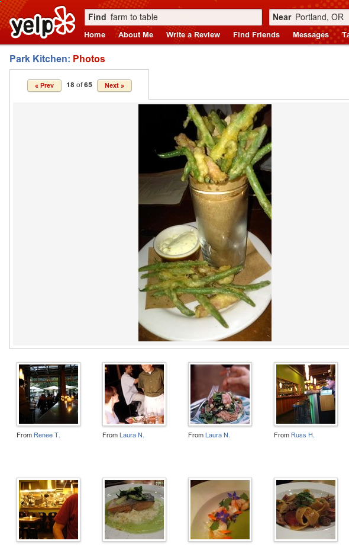
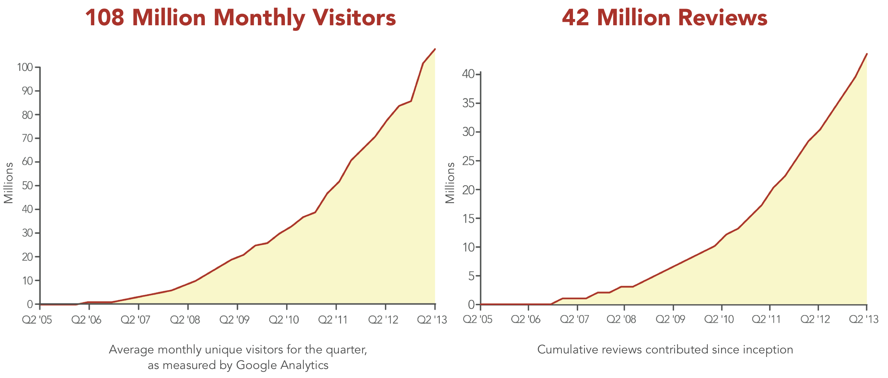
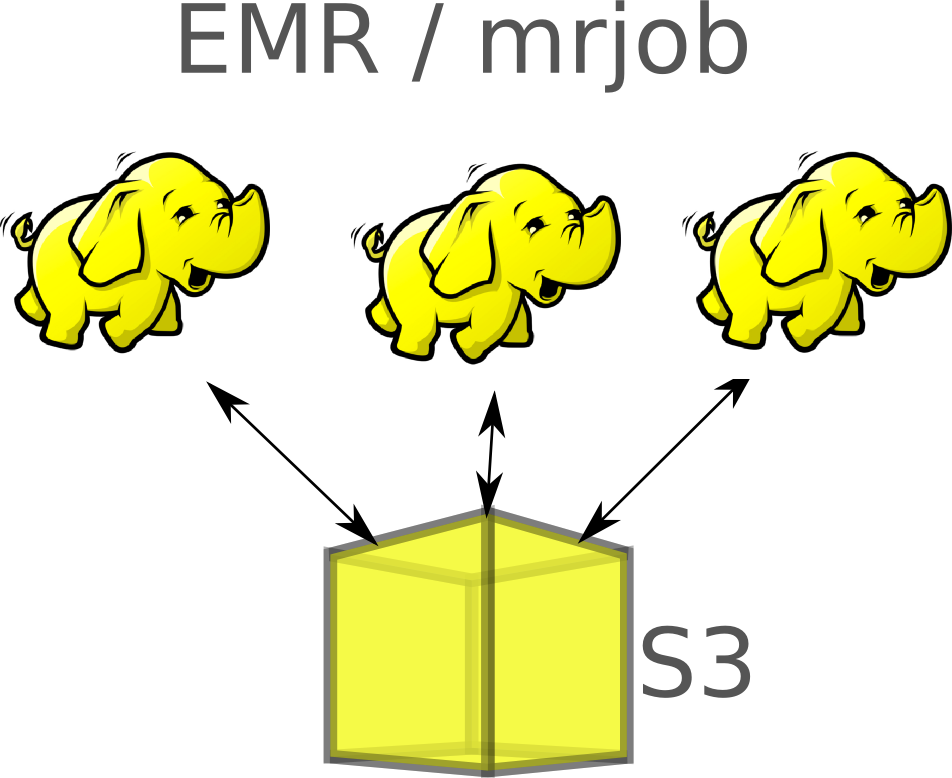
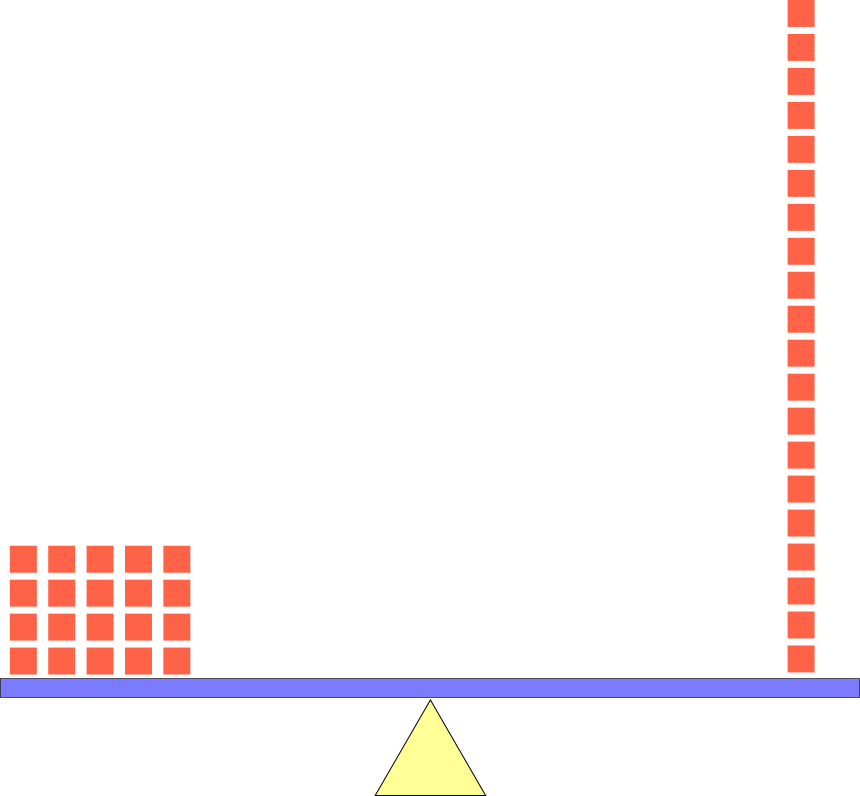
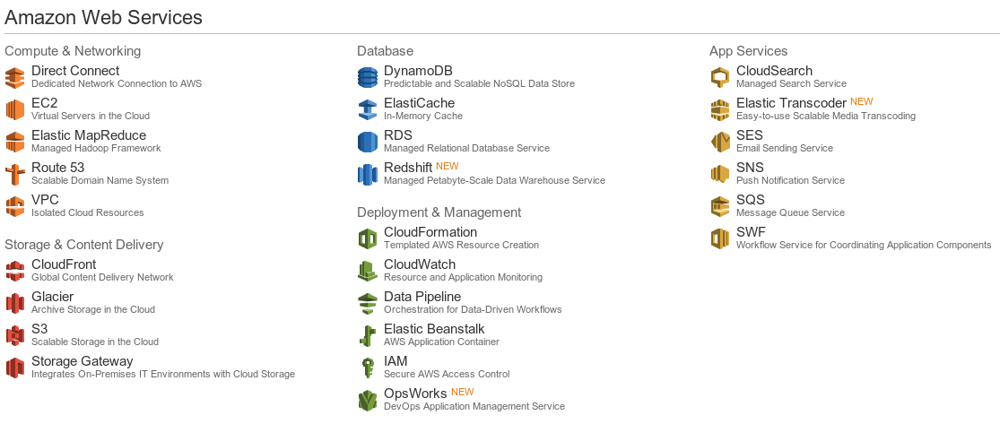
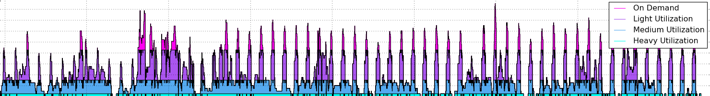
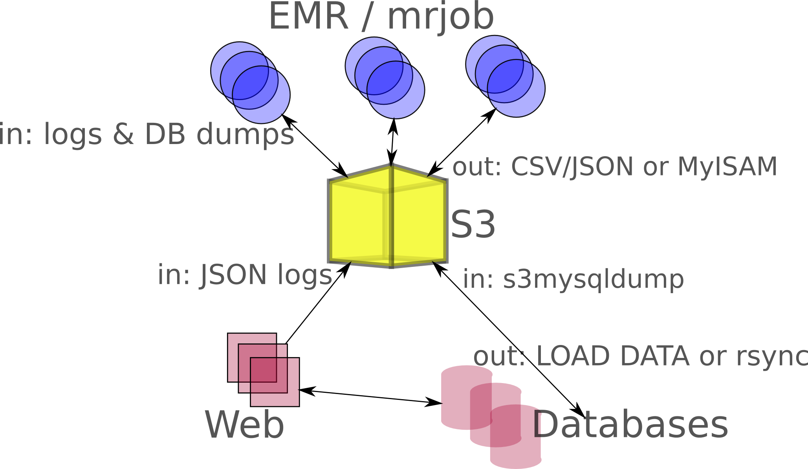
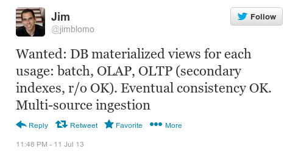

BuildingCloudCulture
Table of Contents
- 1 Building a Cloud Culture at Yelp
- 2 Why Cloud?
- 3 Yelp!
- 4 Yelp Data
- 5 Why Cloud?
- 6 Make the trade-off!
- 7 How Cloud?
- 8 Back to the Past
- 9 Logging
- 10 Logging - an aside
- 11 Log Analysis
- 12 Hadoop Trade-offs
- 13 Riddle: Success?
- 14 Hadoop Issues
- 15 EMR Solutions
- 16 Trade-offs
- 17 Trade-offs
- 18 Trade-offs
- 19 Cargo Cult
- 20 Standard Configs
- 21 mrjob Configs
- 22 Resource Tracking
- 23 Testing
- 24 mrjob is Open Source
- 25 Adoption
- 26 Cloud Calculations
- 27 Cost
- 28 Cost Control
- 29 Data Availability
- 30 Query to Category
- 31 Overview
- 32 Pitfalls
- 33 Leaky Abstractions
- 34 Closed Source
- 35 Data explosion
- 36 Wanted
- 37 Next Up: Services
- 38 Tandem
- 39 Cloud Strategy
- 40 Hiring
1 Building a Cloud Culture at Yelp center
Jim Blomo (@jimblomo)
Engineering Manager - Yelp
Lecturer - UC Berkeley
2 Why Cloud?
- Why and how is Yelp moving some functionality to the Cloud?
- Open source tools for the move
- Pain points
3 Yelp! two_col
- Connects people with great local businesses
- Connects me with Park Kitchen

3.1 Park Kitchen notes
- Anyone not hear of Yelp? Identified the person who eats at the hotel restaurant… get the app, it'll help you find a great place to eat tonight.
- I had one of the best meals this year at a place call Park Kitchen across the river… tempura style green beans and bacon with this great dip…
- You can see pictures of it
4 Yelp Data
- 250+ GB compressed logs / day
- 7+ TB in databases
- TB+ in secondary and derived data

4.1 Dimensionality notes
- An unusual feature of our data is the variety:
- review text, photos, checkins, menu data, friends, PMs
- Interesting mix of structured and unstructured. And unstructured IN structured!
5 Why Cloud?
- Trade-off specificity & optimization for generality & abstraction
- Similar to open source
- Why? Leverage existing technology to innovate faster
5.1 Open source notes
- Specificity
- Ability to tailor an environment to your needs
- Generality
- Must fit your needs into existing generic solution
- Optimization
- Squeeze out every drop of performance, from hardware, software, networking etc.
- Abstraction
- Quickly get to the 50% or 80% solution, focus on the part that is unique. When you start thinking of a new feature of a website, do you start thinking about how to implement the HTTP server? No.
- Open source
- Using existing packages can let you move fast, but you must fit your problem into their domain
6 Make the trade-off!

6.1 Big Theme notes
- Biggest point: when making this move, make the trade-offs!
- One is not inherently better than the other, but you don't win unless you capitalize on the advantages of one solution
- Don't try to replicate your current environment and work flow in the cloud
- To make the most of this, fit your problem into the general domain
7 How Cloud? two_col
- Amazon Web Services (AWS)
- Elastic MapReduce (EMR)
- Python on Hadoop (mrjob)
7.1 Standard notes
- AWS was and is the biggest game in town
- Biggest environment: remember trade-offs? We're looking for general technology we can leverage – not cheapest or fastest
- EMR is one of those pieces: spin up a cluster
8 Back to the Past two_col
- 2004: Yelp founded.. Yeah!
- Typical LAMP stack with Python
- Hosted in data center
8.1 Little Jon notes
- Thanks to Little Jon and Chappel, everyone was shouting "Yeah!!"
- Launched with Python
- Before AWS officially launched
- Before Django launched
- Before SQLAlchemy
- Most of the website code is custom, slowly migrating to standards
9 Logging
- 2007: Got serious about logging
- To understand user behavior, you must record user behavior
- "Ranger": Structured application level logging
10 Logging - an aside
- Log in a structured format
- Log every ID appearing on a page
- Don't log PII or sensitive data
{user_id: 5,
request_id: "b1946ac92492d2347c6235b4d2611184",
search_query: "farm to table",
city: "Portland, OR",
results: [17289, 8230452, 825429, 184312,...]
}
10.1 Do this notes
- Structured format
- JSON, Protocol Buffers, Avro… just something you don't have to manually parse. Trade-offs are another talk
- IDs
- users, reviews, products, recommendations… you're going to want to know what was viewed, what was taken action on
- ???
- PII ::: There's lots of rules around where and how to store that stuff, and you really don't want it out. Easier to lock down DBs with that data than logs
11 Log Analysis
- 2010: Got serious about log analysis
- Processing a day of logs took > 24 hours
- Embarrassingly parallel: Hadoop
11.1 2010 notes
- movies: Inception
12 Hadoop Trade-offs
- Java vs Python
- MapReduce vs global knowledge
- Distributed vs single machine
12.1 Trade-offs notes
- First big trade-off in this story
- We didn't try to write our own Python version, we used the Java one
- cobbled together our own spare machines for a cluster to experiment on
- Hadoop Streaming shim between writing code in Python, running system in Java
- Converted our problems to MR paradigm
13 Riddle: Success? animate two_col
- How do you know when your infrastructure is a success?
- Starts failing under heavy load
- "Too many" users overloading the system
13.1 Don't get upset! notes
- Good job, now everyone wants to use your system and scale
- Just have to keep momentum going
14 Hadoop Issues
- Failures correlated with cluster uptime
- Upgrades painful
- Coordination required for new features
15 EMR Solutions two_col

- Clusters up for limited amount of time
- Upgrades handled by Amazon
- Multiple clusters means no capacity coordination
15.1 Notes notes
- Upgrades also include Hive, HBase, and now Spark
16 Trade-offs
- Specialty knowledge of Hadoop vs Specialty knowledge of EMR
- Coordination for feature launch vs Coordination of code deployment to cloud
- Testing on the local cluster vs Testing on EMR
16.1 Fake trade-offs notes
- Before had to coordinate with systems and other teams to not overwhelm system, but with the cloud needed to coordinate with systems and other teams to deploy code to the cloud
- Are these the trade-offs you want to make?
- Is this what we hoped to gain from the cloud?
17 Trade-offs
Specialty knowledge of Hadoop vs Specialty knowledge of EMRCoordination for feature launch vs Coordination of code deployment to cloudTesting on the local cluster vs Testing on EMR
17.1 Fake trade-offs notes
- No! You must figure out what you hope to get out of a cloud move and make sure and getting the trade-off you'd like
18 Trade-offs
- Specialty knowledge of Hadoop vs Standard configs
- Coordination for feature launch vs Resource consumption tracking
- Testing on local cluster vs good-enough testing of code & infrastructure
18.1 Real trade-offs notes
- Here are the real trade-offs we made, with the distinct advantages they provide.
- Old ones, maybe you were on the cloud, but you weren't buying anything!
19 Cargo Cult center
19.1 Cloud is not enough notes
- Just moving to the cloud is not the goal
- You're trying to solve a specific problem, so make sure at the end of the day it is solved
- We are trying to make engineers more efficient by giving them tools, not more problems
20 Standard Configs
- mrjob will spin up an EMR cluster, run bootstrap options, install packages
- At launch, your code copied to cluster
- Configs: Standard, Memory Intensive, CPU Intensive

20.1 Remove specialty knowledge notes
- 20 minute mark
- We're trading off specialty knowledge for "pretty good" standard configurations
- Focus is on business logic, can get out solution faster
- Even if it is not 100% optimized
- The easiest way to address a problem is also the easiest way: just pick a new standard config
21 mrjob Configs
runners: emr: # standard ec2_core_instance_type: m1.large num_ec2_core_instances: 5 # memory intensive ec2_core_instance_type: m1.xlarge num_ec2_core_instances: 12 bootstrap_actions: - s3://elasticmapreduce/bootstrap-actions/configurations/latest/memory-intensive - s3://elasticmapreduce/bootstrap-actions/add-swap # cpu intensive ec2_core_instance_type: c1.xlarge num_ec2_core_instances: 5
22 Resource Tracking two_col
- Remove resource constraints, prevent uncontrolled growth
- mrjob shuts down unused clusters
- Monitors for jobs running > 1 day
python -m mrjob.tools.emr.terminate_idle_job_flows -c mrjob.conf
22.1 Be prepared notes
- With a fixed sized cluster, easy to know what was going on… every purchase has to be justified
- But this slows down development: goal is flexibility & speed
- But if you don't have to justify, still need to know what's going on and be notified of mistakes
- Gatekeeper => Trust, but verify
- mrjob has a component which runs as a cron, finds unused clusters, terminates them
- Finds clusters running > 1 day, sends emails
- Labels jobs with names: developer and script
23 Testing
- mrjob has "local" mode to simply run MapReduce steps without cluster
- add
--runner emrto run on a cluser - Infrastructure tested with
mr_canary.py
23.1 Trade-off notes
- Two types of errors: logic errors, infrastructure errors
- Logic errors: run test cases through python code in local mode. Don't need to test machine failure, EMR spin up, etc.
- Infrastructure: not loading the same libraries on cluster as in development
- mrcanary loads all libraries, tries to run brain-dead logic. Does need to spin up cluster, but only once
24 mrjob is Open Source
- https://github.com/Yelp/mrjob
- 0.4 includes support for other languages
- MapReduce paradigm
- EMR cluster management
24.1 Benefits notes
- open source development model works really well when you're making the general specific trade-off
- Don't want everyone in company to understand the internals
- But this means you need great documentation on usage,
- Stable releases
- Keep it general for easy adoption
25 Adoption two_col
- Make data & resources easily available
- Emphasize cloud benefits
- Easiest to do the right thing
25.1 Story notes
- Let me tell you a story:
- We had one of these mrjob emails: "Hey this job is taking longer than a day"…
- Developer responded: oh, I expect this to take 5 days, backfilling a feature
- Learning opportunity: 5 days with 10 machines == 1 day with 50 machines
26 Cloud Calculations two_col

- 5 days with 10 machines = 1 day with 50 machines
- (On demand pricing simplification)
26.1 Emphasize notes
- Keep emphasizing the trade-offs you made: global speed for micro-optimizations!
27 Cost
- Cloud allows infrastructure practically impossible with collocation
- Trade-off cost for flexibility, developer speed
- Not just hosting, paying for development

27.1 Bogeyman notes
- Bogeyman of cloud
- To me, not really worth comparing directly. Cloud offers a fundamentally different model for development
- If you want that model, you must pay for it
- If you really want to compare, consider that Amazon is not just using your money to host. AWS was not the same last year as it is today: RedShift, SSDs.
- It will not be the same next year as it is today
- If you are just paying for hosting, then do the analysis and switch
28 Cost Control
- EMRio: open source reserved instance purchasing
- mrjob: job-flow reuse, spot instances
- HighScalability.com: Leveraging Cloud Computing @ Yelp

29 Data Availability
- Logs: production logs available to developers
- Development environment with separate permissions
s3mysqldumpopen source project to make MySQL data available
29.1 Reminder notes
- Sensitive and PII information not in the logs
- Can optionally use development logs and DB instead, if needing to join
- AWS production credentials separate from development, same billing account
30 Query to Category
- When people search for Pool, what do they mean?
- Swimming pool?
- Billiards?
- Home pool cleaning?
30.1 Explanation notes
- So what type of features were we able to release with this technology?
- Well, what do people mean when they search for Pool?
30.2 Query to Category
- When people search for Pool, what do they mean?
- Swimming pool?
- Billiards?
- Home pool cleaning?
30.2.1 Unstructured Data notes
- We need to look at user behavior to better understand intent
- Use search logs to connect searches with the businesses customers end up on
- Different per country? Per city? Per person?
- Backfill: look at all of the search logs in our history
31 Overview center

31.1 Data movement notes
- Webs use databases as OLTP, writing and reading transactions
- Webs log data, in JSON as described
- Once a day upload logs into S3
- Databases also get incrementally dumped into S3 with s3mysqldump
- mrjob launched jobs in EMR, processing this data
- Spits out either flat files
- JSON gets further processed by Python, then loaded into DB
- CSV often gets loaded in via
LOAD DATAstatements - When databases got overload from loading so much data, we created the tables in EMR, then just rsynced them (only works for MyISAM)
- Online processes use this loaded data
32 Pitfalls two_col
- Leaky abstractions
- Closed source
- Managing data explosion
32.1 Unicorns notes
- No silver bullet
- Still require skill to debug problems
33 Leaky Abstractions
- "read-after-write" consistency in S3 extremely limited
- GET after PUT of specific new object
- Running Hadoop on S3 "directory" would sometimes miss files
- Solution: test for consistency, wait longer
33.1 Read docs notes
- Upload logs to an S3 bucket each night, run job when done
- Just point job at directory, it LISTs file, runs over all the files
- But when "done" sometimes S3 would not LIST them
- Sometimes you will not get the semantics you would like
- Must work inside the framework… this is the trade-off
- Not a great solution here, but it has stopped coming up as much so lower priority
34 Closed Source
- Some Hadoop output 'part' files blank or corrupted
- Speculative execution + S3 inconsistency + closed S3 uploader
- Solution: bootstrap-actions/configure-hadoop
mapred.reduce.tasks.speculative.execution=false
34.1 Interactions notes
- You will face problems with services and frameworks interacting
- You will need to work with provider to track down problems you don't have the source to
- Hope is you will do it less than if you were developing it yourself
35 Data explosion
- Standardize location of inputs and outputs
- Semantic concept of "most recent" version of data
- Reuse and dependencies
- Partial solution: Tron: open source distributed* cron
35.1 Tron notes
- One of those 'success is failure': so many people using cloud, need to track what's going on
- Sharing data across teams can be difficult. When will their job finish?
- Still want to run if dependency failed?
- More flexible configuration and reporting
- Can distribute jobs across machines, systems. State itself is not distributed
- Data Pipeline another potential solution
36 Wanted center

36.1 What notes
- Currently we have a lot of customized solution for data flow
- s3mysqldump from mysql to S3, EMR for batch processing, some Hive for adhoc analysis, looking at Red Shift…
- Another system for syncing EMR output into MySQL by creating MyISAM tables in the cloud
- What keeps Red Shift and MySQL in sync?
- Would like to integrate them into a coherent system
37 Next Up: Services
- Decrease coordination costs of launching new features
- Experiment with new stacks
- Sound familiar?
37.1 Cloud notes
- We think AWS can help us develop services like add target and ElasticSearch faster
- We'll trade-off the optimizations we could make on our own hardware for the speed at which we can bring up services in an uncoordinated way
- Provide these services to consumers who don't have to know details
- Eg. ElasticSearch provided by search team
- Requires documentation, and making data available
38 Tandem
- Direct Connect from Datacenter to AWS
- Generalized packaging: Python eggs, docker/packer
- AWS deployments: Netflix Animator, Jenkins testing
38.1 Tools notes
- There are a few tools we're using to improve our services deployment stack
- still early days, but we've learned a few lessons
- Direct Connect to AWS decreases concerns about large data transfers and latencies: means you can run services in AWS and call them from the DC
- Packaging is critical. You'll never want to run something in only one environment, so make it easy to install. better than github sub-repos
- When creating ephemeral nodes, it makes more sense to create the exact machine image you want to use (Animator) and test it (Jenkins) before deploying it
39 Cloud Strategy
- Target a problem you're trying to solve
- Trade-off specificity & optimization for generality & abstraction
- Leverage technology by fitting problem into domain
- Make the right way the easiest way
39.1 Wrap Up notes
- So this is our Cloud Strategy:
- Make sure we have a problem we're trying to solve, and that the cloud is a good fit
- The cloud is a good fit when you want to make this trade-off of giving up extreme customizability and optimization for a general abstraction you can build on top of to achieve your goal.
- Then make the trade-off: fit your problem into the new domain, make the best use of available tools, and build new tools to fill in gaps. Give up the old way of doing things.
- Encourage adoption by giving developers the tools they need, make the right thing the easiest thing to do.
40 Hiring center
40.1 We are Hiring notes
- Position on almost every team
- We want to connect everybody on earth with the great local businesses in their area
- Need your help to make more open source solutions, apply them to interesting problems